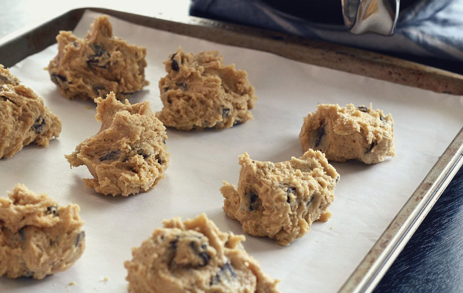
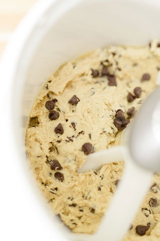
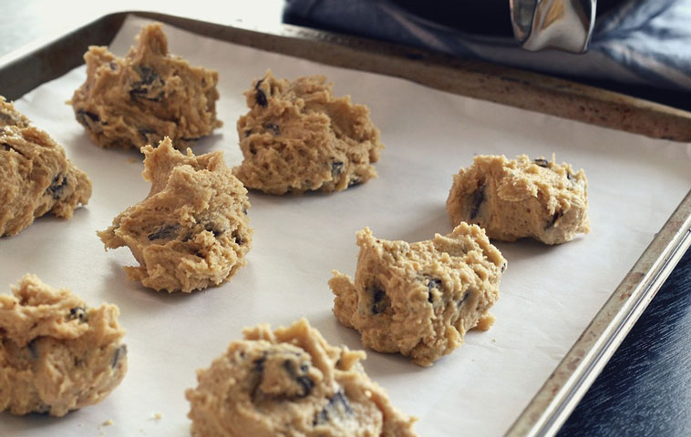

Again, this Edible Eggless Chocolate Chip Cookie Dough recipe is courtesy of CenterCutCook
This Edible raw cookie dough is safe to eat because there are no eggs! Of course, "all things in moderation". You should never eat a ton of this at once! Too much of anything can make you sick.
| Steps | Directions |
|---|---|
| Step 1 | Using a mixer, cream together butter and brown sugar. |
| Step 2 | Add in vanilla and salt, and mix together. |
| Step 3 | Add in flour. Dough should be crumbly. |
| Step 4 | Add in 2 Tbsp of milk and mix. |
| Step 5 | With a spoon or spatula, fold in a 1/2 cup of each of your chips. (Mini and milk chocolate.) |
| Step 6 | Cookie dough complete! You can store the leftovers in your refridgerator, or freeze it for up to three months. You can also roll small chunks of it into little balls and put it in ice cream!  |
And there you have it! Completed edible raw cookie dough for snacking on, putting in ice cream, or baking later!